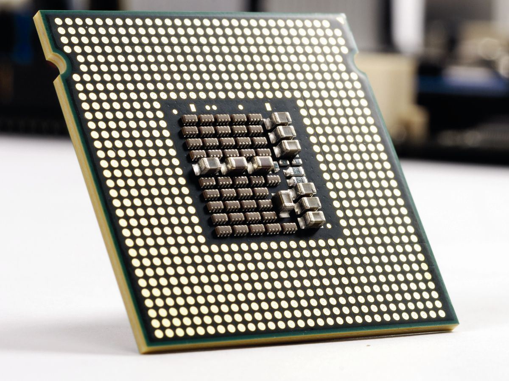
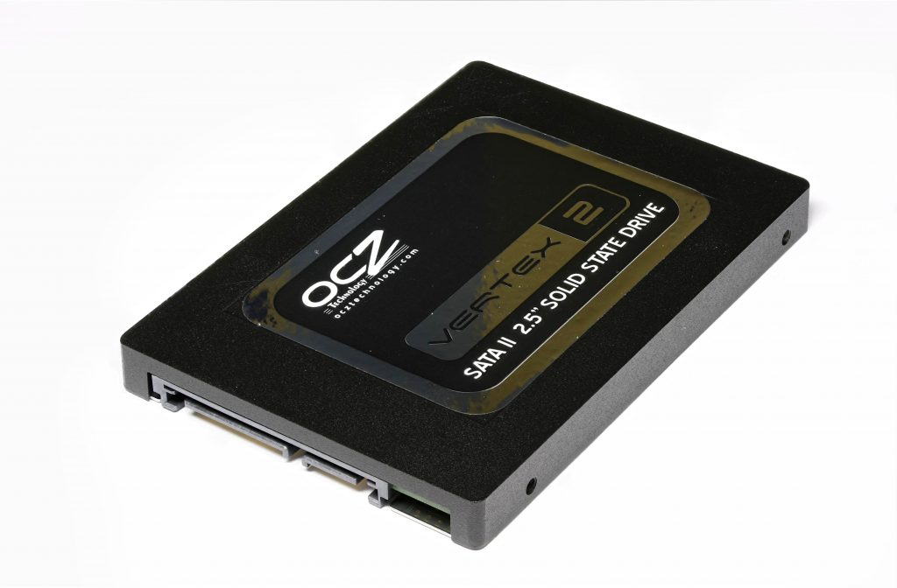
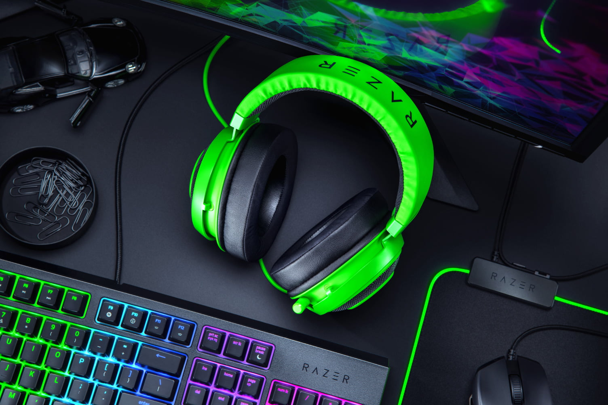

Hardware de Ordenadores
El hardware de un ordenador es el conjunto de componentes físicos que permiten su funcionamiento. En esta página, exploraremos los principales componentes del hardware de un ordenador y su función en el sistema.
Principales Componentes del Hardware
El hardware de un ordenador se compone de varios elementos esenciales, cada uno con una función específica para permitir el funcionamiento del sistema.
1. Placa Base (Motherboard)

La placa base es el componente principal de un ordenador, ya que conecta todos los demás componentes. En ella se encuentran los circuitos integrados que permiten la comunicación entre la CPU, la memoria y otros periféricos.
2. Unidad Central de Procesamiento (CPU)
La CPU es el "cerebro" del ordenador. Se encarga de procesar las instrucciones y ejecutar las tareas del sistema operativo y las aplicaciones. Cuanto más potente sea la CPU, más rápido será el ordenador.
3. Memoria RAM

La memoria RAM (Memoria de Acceso Aleatorio) es una memoria volátil que almacena temporalmente los datos y programas que están siendo utilizados por la CPU. A mayor cantidad de RAM, el ordenador podrá realizar más tareas al mismo tiempo sin lentitud.
4. Tarjeta Gráfica (GPU)

La GPU se encarga de procesar los gráficos y las imágenes del ordenador. Es especialmente importante en actividades como el gaming, la edición de video y el diseño gráfico, donde se requieren altos niveles de procesamiento visual.
5. Almacenamiento (Disco Duro/SSD)
El almacenamiento es el componente donde se guardan los datos de manera permanente. Puede ser un disco duro (HDD) o una unidad de estado sólido (SSD). Los SSD son más rápidos que los HDD, pero suelen tener menor capacidad.
6. Fuente de Alimentación

La fuente de alimentación proporciona energía a todos los componentes del ordenador. Su capacidad varía según el consumo de energía de los otros componentes, especialmente la CPU y la tarjeta gráfica.
7. Periféricos
Los periféricos son dispositivos externos que se conectan al ordenador para interactuar con él. Algunos ejemplos comunes son el teclado, el ratón, la impresora y el monitor.